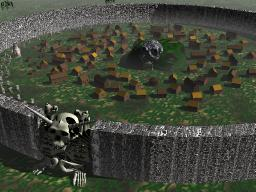
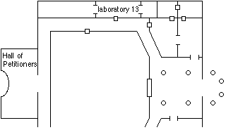
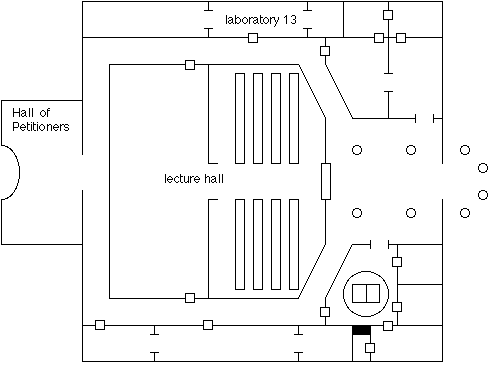

loodied but not defeated, the party bound their various wounds on the sandy
beachhead outside the walls of the strange city.
Zembahk Kaydian, chosen avatar of the War God Adorok
Haer Gronagin said that this settlement had not existed when last
he visited this area a scant twenty years before. Strong magics must have been
required to cause such a place to spring up in mere decades. The walls appeared
thick, and twenty feet high at their crest. They were honeycombed with a maze
of twisty little passages, all alike. Mere thought of climbing brought forth
their occupants, serpentine Naga with a warning of doom to any who attempt
entrance via other than the gate.
Using a spell of the Mentalism realm, the High Elf Rosvenir located
the Paladin on the opposite side of the City. He attempted a Far Voice
to communicate with Sir Kurik, but the strange mental shielding affecting the
Paladin blocked the attempt. Closer proximity being an aid to the magic, we
made our way around the outer wall to the south and west.
This route passed near the main gate to the City. Constructed
entirely of ancient bone and with a leering skull gazing down from twenty feet
above, I could discern no obvious mechanism or seam to open. Intending to cross
in front of it to reach the other side of the city, we skirted around it as far
as the sandy path in front would allow. It was not far enough. As I expected,
the gate was a summoned entity from the nether planes. At our approach it
animated and demanded "What is the sign?" The halfling
retrieved the drawing Mystical had
purchased in Kalstrand and said "The Sign of the Devourer." The bone
demon stood and stepped aside. It is good to let the lesser races accomplish
something on occasion.
The Narrator
Beyond the gate a small city beckoned. Constructed mostly of wood,
small houses and businesses lined dirt roads and pathways. No apparent planning
had gone into its construction, the streets meandering aimlessly between
structures variously ramshackle and sturdy. Surrounding the city on all sides
was an extensive graveyard where small patrols of skeletons and zombies worked
under the direction of robed humanoids. A chance glimpse of one of these noted
a skull tattooed prominently on his forehead. At the center of the city lay a
huge mound of rock and dirt, topped with an enormous skull carved of blackish
stone grinning down upon the city.
Rescue of Sir Kurik took precedence over further exploration. Dusk had
just fallen, and candles spaced at intervals atop the stone wall flared to
life. Activity in the streets of the city was already beginning to pick up. The
graveyard being less travelled, the party walked along the path clockwise
towards the last known location of the paladin. As they drew near a ghastly
figure stumbled toward them. It was Kurik, pale and haggard and having great
difficulty walking. Made to rest and drink water, Kurik said he'd fallen asleep
with a vision from Pandios, and had awoken within the City. He had no idea how
long he had been gone, believing that but a single day had passed. He had not
been a captive but had been free to wander and had apparently been doing so for
four days in delirium.
The buildings nearest the graveyard were in poor repair, many no
more than hollow shells of thatch and wood. Only few were occupied as evidenced
by the glow of candlelight from within. Mystical located two such huts close
together, and made them more defensible with several Walls of Wood.
Kurik was helped into the structure, given food and water, and immediately fell
into a deep sleep. Rosvenir studied the stars, and cast Dream to know
more of the grey robed humans with the skull tatoos, and to know the location
of Desatysso and his amulet.
Rosvenir's Dream
the amulet... can almost see it, but the light is too dim...
featureless black disk in the darkness... must touch it... the amulet shatters
into a thousand pieces, each one glowing like a star in the night sky...
looking down from that sky, upon this city of the undead... hooded figures walk
through the streets and into the skull monolith at its center... hooded figures
seated on rows of benches in a huge hall, listening to someone speaking... In a
back corner a figure is standing, not wearing a robe... It is Desatysso... his
face contorted in utter despair... he disappears...
The Narrator
Rosvenir awoke. He noted a similarity between the thousand glowing
pieces the amulet had broken into and the thousand glowing candles atop the
City walls, though the resemblance was slight. Checking on Kurik found him
recovering quickly. It was shortly after midnight, and the City bustled with
activity. Kurik remembered wandering through a market near the central plaza
of town. This seemed a promising way to learn more about the nature of the
place.
From outward appearances the market was startlingly normal. Throngs of
people funneled through row upon row of merchant carts stocked with wares. On
closer inspection the nature of the place became more ominous, with vendors
of owl bile and body parts intermixed with more the mundane food and clothing.
Haer asked about a tavern, somewhere where he could get a hot meal. A merchant
looked at the halfling askance, telling him "The Academy doesn't allow
alcohol in the City, it distracts the students from their studies."
Haer wandered onward to another merchant.
Grey robe: And if that shipment of owl intestines isn't in my lab by tomorrow I shall turn my researches to the properties of human intestines. Beginning with yours! <storms off> Merchant: <trembling slightly> Yes, Marlowe. Of course, it shall be here tomorrow I promise. Endira: <batting eyelashes as she makes her seduction roll> He sounded upset.With the prompting of a natural 100 on a seduction roll the merchant became quite forthcoming. The city exists because of the Black Academy, a school of sorcery housed beneath the skull in the central square. Anyone can enter the academy and apply to join. Additionally, merchants from the city frequently make deliveries. The headmistress of the Academy is Ferranifer, reportedly a very beautiful woman.
The party returned to the center of the city. A star shaped courtyard surrounded the entrance to the academy, with a small reflecting pool flanked by a jet black obelisk. The obelisk is carved with "Acerak Walks Among Us", and a depiction of the Devourer. Across the courtyard from the black skull is a large brown tent where members of the Academy could get animated skeletal servants for the evening. Indeed, many of the grey robed students in the market were accompanied by a minor undead to carry their purchases. Haer stalked over to the tent and looked under the edge, finding dozens of skeletons and zombies milling about bathed in the green glow of an orb mounted at the crest of the tent.
Endira

The entrance to the Black Academy was guarded by a huge warrior-type
wearing a full suite of plate mail made of solid bone and he looked really
nasty so we decided to talk our way in and for some reason everyone thought I
would be the best one to try it so Zem and I took an armload of alchemical
supplies that Haer picked up from somewhere and walked up the steps and said
we were making a delivery for Marlowe. The guy looked us up and down and I
explained that Marlowe was upset that his order of owl intestines wasn't
here so we were delivering a special gift of other supplies to try to make
it up to him and the guy said we should deliver them to Laboratory 13 which
is down the hall and to the right.
So we went through the archway and into this big room where all
the walls were lined with hundreds of black candles and it gave off an eerie
light and there were four columns holding up the ceiling with skeletal
snakes wrapped around them and each snake had a human head like the ones we
saw outside the wall hey I wonder if those are Naga skeletons huh? So we
went down the hall and found the door to Lab 13 and Zem turned himself
invisible and did some exploration but he couldn't go very far because even
though he's invisible he's still this big warrior type with a bloodthirsty
sword strapped to his back so he makes a lot of noise and at this moment I
can't remember why we didn't send in the halfling.
So I was stalling for time while Zem explored the area when this
woman wearing a grey robe came up to me and asked if I was lost so I said I
was looking for Marlowe in Lab 13 and she pointed down the hall to a door
on the right and said that was the lab and that her name was Jocelyn and she
was very glad to make my acquaintance. I thought she was quite polite and
helpful for being a minion of evil and all so I chatted with her a moment and
she said I should consider becoming a student and that she's learning so much
at the Academy she just can't believe it so I said thanks I'd think about it
but for now I was working for a merchant in the city making deliveries while
I think things over so she said sure and that she had to head to her next class
so she hoped to see me around.
The Narrator
Zem explored several laboratories. The first irregularly shaped
room held four humans chained to the wall, unmoving. Various surgical
instruments and grotesque jars of unidentifiable organs lined the walls and
tables. The door to the north was carved with a lengthy
treatise concerning the nature of Undead. An
archway to the east led to a room whose walls were lined with parchment
detailing human anatomy and internals. A flayed human body lay on the table
in front of a group of grey robed students, while a crazed-looking old man
lectured.
Endira knocked on the door to Lab 13, and was brusquely told to
put the packages in the corner for Marlowe to pick up later. Zem snuck in
invisibly while the door was open. The three students in the room wheeled in
a corpse and stretched it out on the table. A small quantity of dust was
sprinkled on the corpse from a velvet bag. After a few moments, the corpse
began to quiver. Then it grabbed the closest student by the throat and began
to strangle him, while the other two beat its arm back. In the room to the
west were more students experimenting with the dust, while the room to the
east was empty save for a ghastly smell.
Zem rejoined Endira, and the two continued down the hallway and
around the corner. A heavy velvet curtain hung across the open doorway of
the far room. A huge stone skeleton stood along its far wall. When the curtain
was pulled back the skeleton's eyse glowed bright red and a booming voice
said, "Enter and be judged, Petitioner." Zem let the
curtain fall, and the two rejoined the rest of the party outside the Black
Academy.
It was near dawn, and the bustle of activity in the City was
winding down. Deciding to infiltrate the Academy en masse the following night,
the party returned to the hovel, posted a guard and slept until midmorning.

Day 19
The next morning, Kurik was gone. He left a note saying he had
"something to check out. Will meet you at the Skull at dusk."
Rosvenir's Finding spell was unable to locate him.
A plan developed to deliver several corpses to Laboratory 13, so
that the entire party would be able to enter the Academy. Once inside
everyone would be turned invisible to explore the place fully. Zem went out
to the graveyards to procure several suitable cadavers. Two stretchers were
prepared, and at dusk the group lined up near the central square. As if on
cue, Kurik showed up. Mystical confronted him to know where he had been, and
why he now seemed to shun the daylight. Kurik would not answer. The fact
that he radiated no evil and still prominently carried the holy symbols of
Pandios were taken as proof that he had not been embraced as an Undead, but
the other party members vowed to keep an eye on him nonetheless. Mystical
in particular did not trust him.
Arranging themselves to carry the two stretchers, the party
approached the Black Academy. The warrior in bone armor was standing
in front as though he had not moved since the previous day. He queried
Endira briefly, then told them to proceed inside to Laboratory 13.
Once inside and out of sight of the guard spells were cast to make everyone
invisible, and a quick reconnaissance of the building completed with
the assistance of Stonesight spells. The main lecture
hall in the center of the building was full of students listening
intently to an instructor at the front of the room. The outer walls
of the structure were lined with laboratory rooms and places for students
to study.
Circling around to the side of the building Zem had not explored
they entered a room dominated by a huge book on a stone pedestal. Setting the
corpses down out of the way, the party examined the book more closely.
Mystical
The book sat on a four foot high stone pedestal. Its covers were
made of solid sheets of granite, and the pages appear to be vellum.
According to magical analysis, the book had six powers, only three of which
could be positively identified:
The Narrator
Suddenly and with great commotion a crowd of students exited the
surgical classroom, talking loudly amongst themselves. Being invisible means
it is impossible to tell what other invisible people are doing. In the rush
to get out of the way Endira and Kahlen bumped solidly into each other,
cancelling the spell. Fortunately none of the students had been looking in
that direction when they appeared, so engrossed were they in their
discussions of the finer points of the preparation of intestinal bile in
solution. Jocelyn, the minion of evil who had been so pleasant the previous
day, happened to be in the crowd of students and pushed forward to talk to
Endira.
Jocelyn: Hey, you're back. I wasn't sure we'd ever see you again.
Endira: Why not?
Jocelyn: Well, townspeople tend to burn out quickly here, just can't take the pressure
I guess. I'm really glad to see you again. Have you thought some more about joining
the Academy?
Endira: Ummm... yes, actually thats why we're here. Oh, where are my manners, this
is my friend Kahlen. She's thinking about joining the Academy too.
Kahlen: (whispers) I am?
Endira: So, we think we're ready, but we're not sure what to do so we thought we'd
come see the place and all because its a really big step and we want to be
really sure before we do it that this is the right thing for us.
Jocelyn: Oh sure, come with me I can show you.
Kahlen: (whispers) Is this a good idea?